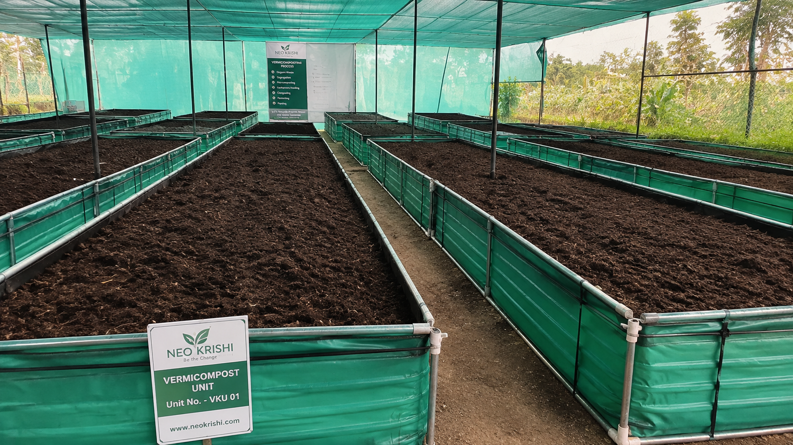
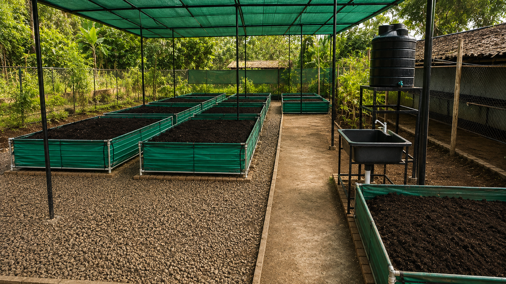
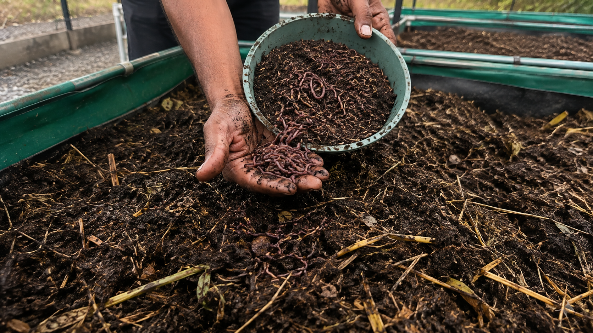
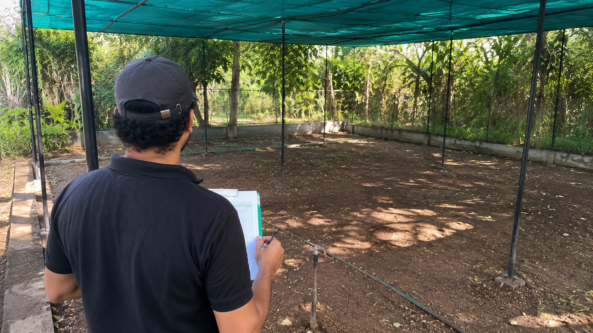

Neo Krishi Vermicomposting Guide
Everything you need to know about vermicomposting, from basics to business setup. Available in Hindi and English.
What is Vermicompost and Why It Matters
Vermicompost, commonly known as worm compost or worm castings, is a natural process in which suitable organic material is gradually broken down with the help of earthworms and microorganisms.

The Direct Benefit
Vegetable scraps, fruit waste, and other biodegradable organic material no longer need to be discarded. Instead, they return to the soil as nutrient-rich compost.
Soil Needs More Than Just Nutrients
Healthy soil contains not only essential minerals, but also organic matter, microorganisms, water, and air. Farming continuously extracts from the soil, which is why maintaining organic matter and natural activity is critical.
The question isn't just "how much fertilizer should we add?" — it's also "how is the soil's health, and how much organic matter is being returned?"
Why Vermicompost Demand Is Growing
- Increasing need for biological inputs in farming and horticulture
- Growing use in nurseries, floriculture, and landscaping
- Rising home and terrace gardening
- Need to convert organic waste into useful material
- Requirement to return organic matter to agricultural soil
- Potential for small-scale agricultural business with limited space
How to Start Vermicomposting at Home or at Scale
Four Things to Decide Before Starting
- Space — Location with water access and drainage
- Water — Reliable water supply, but not waterlogged
- Organic material — Access to clean biodegradable waste
- Regular oversight — Consistent daily care

Step-by-Step Setup Process
1. Choose Your Location
Look for water access, shade, proper drainage, and working space. For larger operations, plan for harvesting and storage areas.
2. Prepare the Beds
Set up appropriate beds or structures for vermicomposting. For commercial units, bed size and shade management should be pre-planned.
3. Introduce Earthworms
Add suitable earthworms (Eisenia fetida) to prepared organic material. Do not introduce worms directly into fresh or very hot material.

4. Prepare Organic Feedstock
Suitable materials include vegetable scraps, fruit waste, and appropriate agricultural residues. Large or tough materials may need pre-treatment.
5. Maintain Moisture
Beds should not be completely dry or waterlogged. Water as needed and monitor moisture levels regularly.
6. Add Material Gradually
Do not overfeed. Monitor for excess moisture, odor problems, or abnormal worm behavior.
7. Regular Monitoring
Watch moisture, temperature, odor, and worm condition. Initial weeks require extra attention.
8. Allow Time for Decomposition
Earthworms and microorganisms gradually transform material into compost. Quality compost is dark and crumbly.
9. Screen and Clean
For commercial sale, remove plastic, stones, and large pieces. Current Neo Krishi standards require sieved, clean compost with appropriate moisture content.
10. Storage and Handover
Store finished compost in a clean space. If you have a purchase agreement, submit material when quality standards are met.
Daily Time Commitment
Standard operations typically require about 15–20 minutes per day of regular maintenance. Actual time varies with season, number of beds, and operational approach.
How Neo Krishi Supports Vermipreneurs
The Neo Krishi Model
If you have space but lack vermicomposting experience, you don't have to start alone. Neo Krishi's current model supports you from installation through quality production and guaranteed purchase.

Site Audit and Unit Selection
We first assess your space. Based on available area, water access, shade, and your goals, we recommend the right unit size for your situation.
Complete Installation
Our current model includes engineered vermicompost beds, shade structures, Eisenia fetida worms, and starter material — all installed and ready to go.
Hands-On Training
Learn material preparation, misting line setup, enzyme application, and moisture management until these skills become second nature. We provide practical, not theoretical, training.
Active Support for One Year
We stay with you through the first year, not just for installation but for ongoing hands-on guidance until you're confident managing the entire production cycle.
Guaranteed Purchase Agreement
The current Neo Krishi model includes a formal buyback agreement with fixed floor prices:
- Raw vermicompost: ₹3.50/kg (sieved, debris-free, ≤30% moisture)
- Raw vermiwash: ₹15.00/litre (filtered, clear liquid)
What Happens to Your Output
Purchased raw material is enriched in our lab with biological cultures and biofertilizers, then sold as retail products like Neo Gold and Neo Vermiboost.
| Unit Size | Space Required | Setup Investment | Est. Annual Gross |
|---|---|---|---|
| 10-Bed Starter | 600–900 sq ft | ₹72,000 | ~₹1.22 lakh |
| 50-Bed Commercial | 3,500–4,500 sq ft | ₹2.75 lakh | ~₹6.10 lakh |
| 100-Bed Enterprise | 7,500–9,000 sq ft | ₹4.85 lakh | ~₹12.20 lakh |
Note: These are website estimates, not guarantees. Actual production and profit depend on location, climate, water access, labor, quality, and operational management.
Who Is This For?
- Farmers and landowners
- People with unused or underutilized space
- Young entrepreneurs starting agricultural ventures
- Retirees looking for meaningful work
- Agricultural entrepreneurs
- FPOs and institutions
- Nursery and horticulture businesses
How to Get Started
If you have approximately 600 square feet or more and want to understand vermicomposting as a business, start by sharing information about your space, water access, and available area. We'll discuss the right unit size and investment level for your situation.
Frequently Asked Questions
Can I make vermicompost at home?
Yes, you can make it on a small scale. Commercial operations require different infrastructure and quality control systems.
How long does compost take to form?
Time depends on material, season, moisture, temperature, and care. It's not the same everywhere.
Is this very time-consuming?
Regular care is essential. Standard operations typically require about 15–20 minutes per day of maintenance.
Do I have to find buyers myself?
Neo Krishi's current model includes a purchase agreement for quality-meeting production.
Is income guaranteed?
No. Website figures are estimates. Actual results depend on unit condition, operational management, climate, and other factors.
वर्मी कम्पोस्ट क्या है और इसकी जरूरत क्यों है?
वर्मी कम्पोस्ट, जिसे आम बोलचाल में केंचुआ खाद भी कहते हैं, जैविक कचरे को केंचुओं और सूक्ष्मजीवों की मदद से खाद में बदलने की एक प्राकृतिक प्रक्रिया है।
सीधा फायदा
सब्जियों का कचरा, फल-सब्जियों के अवशेष और दूसरी सड़ने वाली जैविक सामग्री को फेंकने की जरूरत नहीं। इसे वापस मिट्टी में लाया जा सकता है।
मिट्टी को केवल खाद नहीं, जैविक पदार्थ भी चाहिए
स्वस्थ मिट्टी में खनिजों के साथ-साथ जैविक पदार्थ, सूक्ष्मजीव, पानी और हवा भी होते हैं। खेती लगातार मिट्टी से कुछ न कुछ लेती है। इसलिए मिट्टी में जैविक पदार्थ और उसकी प्राकृतिक गतिविधि को बनाए रखना जरूरी है।
सवाल केवल 'कितनी खाद डालें' नहीं है — यह भी देखना जरूरी है कि मिट्टी की हालत कैसी है और उसमें जैविक पदार्थ कितना लौट रहा है।
वर्मी कम्पोस्ट का काम बढ़ने का कारण
- खेती और बागवानी में जैविक खाद की बढ़ती जरूरत
- पौधशालाओं, फूल-पौधों और बागवानी में बढ़ता उपयोग
- घर और छत पर बागवानी का बढ़ना
- जैविक कचरे को उपयोगी बनाने की जरूरत
- मिट्टी में जैविक पदार्थ वापस पहुंचाने की जरूरत
- कम जगह से शुरू किए जा सकने वाले कृषि-व्यवसाय की संभावना
घर पर या व्यावसायिक स्तर पर वर्मी कम्पोस्ट कैसे शुरू करें
शुरू करने से पहले चार बातें तय करें
- जगह — पानी की सुविधा और पानी की निकासी वाली जगह
- पानी — पानी की विश्वसनीय व्यवस्था, लेकिन जल भराव न हो
- जैविक सामग्री — साफ जैविक कचरे का स्रोत
- नियमित निगरानी — रोज की देखभाल करने वाला व्यक्ति
चरण-दर-चरण सेटअप प्रक्रिया
1. जगह चुनें
पानी की सुविधा, छाया, पानी की निकासी और काम करने की जगह देखें। बड़े ऑपरेशन के लिए खाद निकालने और रखने की जगह भी रखें।
2. बेड तैयार करें
वर्मी कम्पोस्टिंग के लिए उचित बेड या ढांचा तैयार करें। व्यावसायिक इकाई में बेड का आकार और छाया की व्यवस्था पहले से तय करनी चाहिए।
3. केंचुए डालें
उपयुक्त केंचुए (Eisenia fetida) को तैयार जैविक सामग्री में डालें। ताजा या बहुत गर्म सामग्री में सीधे केंचुए न डालें।
4. जैविक सामग्री तैयार करें
उपयुक्त सामग्री में सब्जियों के अवशेष, फल-सब्जियों का कचरा और उचित कृषि अवशेष शामिल हैं। बड़े या कठोर पदार्थों को पहले तैयार करना पड़ सकता है।
5. नमी बनाए रखें
बेड बिल्कुल सूखा या पानी भरा नहीं होना चाहिए। आवश्यकतानुसार पानी दें और नमी की स्थिति देखते रहें।
6. धीरे-धीरे सामग्री डालें
एक बार में अत्यधिक सामग्री न डालें। बहुत अधिक नमी, बदबू या असामान्य केंचुआ व्यवहार पर ध्यान दें।
7. नियमित निगरानी
नमी, तापमान, बदबू और केंचुओं की स्थिति देखें। शुरुआती सप्ताहों में विशेष ध्यान जरूरी है।
8. विघटन के लिए समय दें
केंचुए और सूक्ष्मजीव धीरे-धीरे सामग्री को खाद में बदलते हैं। तैयार खाद गहरे रंग की और भुरभुरी होती है।
9. छानें और साफ करें
व्यावसायिक बिक्री के लिए प्लास्टिक, पत्थर और बड़े टुकड़े अलग करें। Neo Krishi की वर्तमान खरीद व्यवस्था में छनी हुई, साफ खाद और उचित नमी सीमा जरूरी है।
10. संग्रह और उठाव
तैयार खाद को साफ जगह पर रखें। यदि खरीद समझौता है, तो गुणवत्ता पूरी होने पर समझौते के अनुसार माल लिया जाता है।
रोज कितना समय लगेगा
सामान्य व्यवस्था में लगभग 15–20 मिनट प्रतिदिन की देखभाल चाहिए। वास्तविक समय मौसम, बेड की संख्या और संचालन के तरीके पर निर्भर करता है।
Neo Krishi आपके साथ कैसे काम करता है
Neo Krishi का मॉडल
अगर आपके पास जगह है लेकिन वर्मी कम्पोस्टिंग का अनुभव नहीं है, तो अकेले शुरू करने की जरूरत नहीं है। Neo Krishi का मॉडल आपको इकाई लगाने से लेकर उत्पादन सीखने और गुणवत्ता वाली खरीद व्यवस्था तक साथ देता है।
जगह की जांच और इकाई का चुनाव
पहले आपकी जगह देखी जाती है। उपलब्ध क्षेत्र, पानी, छाया और आपकी जरूरतों के आधार पर उपयुक्त इकाई का आकार तय किया जाता है।
पूरी इकाई की स्थापना
हमारे मॉडल में इंजीनियर्ड वर्मी कम्पोस्ट बेड, छाया की व्यवस्था, Eisenia fetida केंचुए और शुरुआती सामग्री शामिल है — सब कुछ तैयार और सेट अप।
व्यावहारिक प्रशिक्षण
सामग्री कैसे तैयार करनी है, मिस्टिंग लाइन कैसे सेट करनी है, एंजाइम का उपयोग, नमी प्रबंधन — ये सब सीखें जब तक ये कौशल दूसरी प्रकृति न बन जाएं। हम सैद्धांतिक नहीं, व्यावहारिक प्रशिक्षण देते हैं।
एक वर्ष तक सक्रिय सहायता
हम पहले साल आपके साथ रहते हैं, केवल स्थापना के लिए नहीं बल्कि चलती देखभाल के लिए, जब तक आप पूरी उत्पादन प्रक्रिया को आत्मविश्वास से संभाल न लें।
गारंटीशुदा खरीद समझौता
Neo Krishi के मॉडल में एक औपचारिक खरीद समझौता शामिल है, जिसमें तय दरें हैं:
- कच्ची वर्मी कम्पोस्ट: ₹3.50/किग्रा (छनी हुई, मलबा-मुक्त, ≤30% नमी)
- कच्चा वर्मीवॉश: ₹15.00/लीटर (फिल्टर किया हुआ, साफ तरल)
आपके उत्पादन का आगे का रास्ता
खरीदी गई कच्ची सामग्री को हमारी लैब में जैविक संस्कृतियों और जैव उर्वरकों से समृद्ध किया जाता है, फिर Neo Gold और Neo Vermiboost जैसे खुदरा उत्पाद के रूप में बेचा जाता है।
| इकाई का आकार | आवश्यक जगह | स्थापना लागत | अनुमानित वार्षिक |
|---|---|---|---|
| 10-Bed Starter | 600–900 वर्ग फुट | ₹72,000 | ~₹1.22 लाख |
| 50-Bed Commercial | 3,500–4,500 वर्ग फुट | ₹2.75 लाख | ~₹6.10 लाख |
| 100-Bed Enterprise | 7,500–9,000 वर्ग फुट | ₹4.85 लाख | ~₹12.20 लाख |
नोट: ये वेबसाइट पर दिए गए अनुमान हैं, गारंटी नहीं। वास्तविक उत्पादन और लाभ जगह, मौसम, पानी, श्रम, गुणवत्ता और संचालन पर निर्भर करते हैं।
यह काम किन लोगों के लिए उपयोगी है
- किसान और जमीन के मालिक
- खाली या कम उपयोग वाली जगह वाले लोग
- कृषि व्यवसाय शुरू करने वाले युवा
- सेवानिवृत्त व्यक्ति
- कृषि उद्यमी
- FPO और संस्थाएं
- पौधशाला और बागवानी व्यवसायी
शुरू कैसे करें
अगर आपके पास लगभग 600 वर्ग फुट या उससे अधिक जगह है और आप वर्मी कम्पोस्टिंग को व्यवसाय के रूप में समझना चाहते हैं, तो अपनी जगह, पानी और उपलब्ध क्षेत्र की जानकारी साझा करें। उसके बाद उपयुक्त इकाई और लागत पर बात की जा सकती है।
अक्सर पूछे जाने वाले सवाल
क्या घर पर वर्मी कम्पोस्ट बनाया जा सकता है?
हां, छोटे स्तर पर बनाया जा सकता है। व्यावसायिक संचालन के लिए अलग ढांचा और गुणवत्ता नियंत्रण चाहिए।
खाद बनने में कितना समय लगता है?
समय सामग्री, मौसम, नमी, तापमान और देखभाल पर निर्भर करता है। हर जगह एक जैसा नहीं होता।
क्या यह बहुत समय लेने वाला काम है?
नियमित देखभाल जरूरी है। सामान्य व्यवस्था में लगभग 15–20 मिनट प्रतिदिन का समय लगता है।
क्या मुझे खुद खरीदार खोजने होंगे?
Neo Krishi के मॉडल में गुणवत्ता वाले उत्पादन के लिए खरीद समझौता शामिल है।
क्या आय पक्की है?
नहीं। वेबसाइट के आंकड़े अनुमान हैं। वास्तविक परिणाम इकाई की स्थिति, संचालन, मौसम और दूसरे कारकों पर निर्भर करते हैं।
Ready to Build Your Vermicomposting Business?
Join 300+ vermipreneurs already generating guaranteed income from their soil. Complete site assessment and personalized setup plan — no cost, no obligation.
Apply for Your Setup